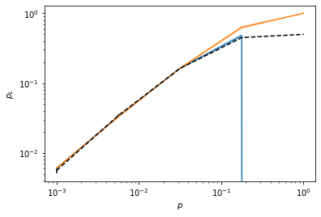

# Define quantum circuit for GHZ preparation on 4 qubits
# with a flag on 5-th qubit, signalling fault-tolerant preparation status
ghz = qs.Circuit([ {"init": {0,1,2,3,4}},
{"H": {0}},
{"CNOT": {(0,1)}},
{"CNOT": {(1,2)}},
{"CNOT": {(2,3)}},
{"CNOT": {(3,4)}},
{"CNOT": {(0,4)}},
{"measure": {4}} ])
# Define quantum circuit for stabilizer measurements of GHZ state
# 4-qubit ghz state, stabilizers: XXXX and three ZZ parity checks
ghz_stabs = qs.Circuit([{"init": {4}},
{"H": {4}},
{"CNOT": {(4,0)}},
{"CNOT": {(4,1)}},
{"CNOT": {(4,2)}},
{"CNOT": {(4,3)}},
{"H": {4}},
{"measure": {4}},
{"init": {4}},
{"CNOT": {(0,4)}},
{"CNOT": {(1,4)}},
{"measure": {4}},
{"init": {4}},
{"CNOT": {(1,4)}},
{"CNOT": {(2,4)}},
{"measure": {4}},
{"init": {4}},
{"CNOT": {(2,4)}},
{"CNOT": {(3,4)}},
{"measure": {4}}])
# Define transition `check` functions for protocol
def logErr(m):
return m != 0b0000
def lut(s):
syn = format(s, '04b')
sx = syn[0]
sz = syn[1:]
c = qs.Circuit(noisy=False) # perfect correction (not noisy)
if sx == '1':
c.insert(tick_index=0, tick={'Z': {0}})
if sz in ['001', '100', '110', '011']: # '111' and '010' can only guess, '000' trivial
corrs = {'001': {3}, '100': {0}, '110': {1}, '011': {2}}
c.insert(tick_index=0, tick={'X': corrs[sz]})
return c
functions = {'logErr': logErr, 'lut': lut}
ghz_stab = qs.Protocol(check_functions=functions, fault_tolerant=True)
ghz_stab.add_nodes_from(['ghz', 'meas_1', 'meas_2'], circuits=[ghz, ghz_stabs, ghz_stabs])
ghz_stab.add_edge('START', 'ghz', check='True')
ghz_stab.add_edge('ghz', 'ghz', check='ghz[-1]==1')
ghz_stab.add_edge('ghz', 'meas_1', check='ghz[-1]==0')
ghz_stab.add_edge('meas_1', 'COR', check='lut(meas_1[-1])')
ghz_stab.add_edge('COR', 'meas_2', check='True')
ghz_stab.add_edge('meas_2', 'FAIL', check='logErr(meas_2[-1])')
# Sample protocol
# Sampling parameters
sample_range = np.logspace(-3,0,5)
err_params = {'q': sample_range}
err_model = qs.noise.E1
CHP = qs.StabilizerSimulator
p_max = {'q': 0.1}
# Direct MC sampling
print("--- Direct MC sampling ---")
mc_sam = qs.DirectSampler(ghz_stab, CHP, err_params=err_params, err_model=err_model)
mc_sam.run(20000)
print("--- Subset sampling ---")
ss_sam = qs.SubsetSampler(ghz_stab, CHP, p_max=p_max, err_model=err_model, err_params=err_params, L=1)
ss_sam.run(2000)
# Plot results
p_L, std = mc_sam.stats()
p_L_low, ss_std_low, p_L_up, ss_std_up = ss_sam.stats()
plt.errorbar(sample_range, p_L, fmt='--', c="black", yerr=std, label="Direct MC")
plt.loglog(sample_range, p_L_low, label='SS low')
plt.fill_between(sample_range, p_L_low-ss_std_low, p_L_low+ss_std_low, alpha=0.2)
plt.loglog(sample_range, p_L_up, label='SS low')
plt.fill_between(sample_range, p_L_up-ss_std_up, p_L_up+ss_std_up, alpha=0.2)
plt.ylabel('$p_L$')
plt.xlabel('$p$')--- Direct MC sampling ------ Subset sampling ---Text(0.5, 0, '$p$')